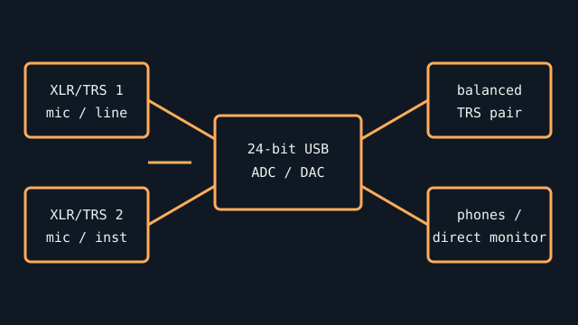

[ INDIVIDUAL COMPONENT // SOUND HARDWARE ]
Behringer U‑Phoria UMC202HD
A 2-input/2-output USB recording interface with MIDAS-designed preamps and direct monitoring. Do not conflate this HD model with the UMC202 or later revisions.

Specifications
| Product ID | Behringer U‑Phoria UMC202HD; manufacturer model code P0BJZ. |
|---|---|
| Bus | USB 2.0, USB Type-B device connector; bus-powered. |
| Connectors / I/O | Two XLR/TRS combo analog inputs with instrument/line selection, stereo 1/4-inch TRS outputs, headphone output, USB-B; no MIDI I/O. |
| Conversion | 24-bit, up to 192 kHz ADC/DAC. Two simultaneous input channels and two output channels; direct monitoring routes input without host round trip. |
| Drivers / OS | Official package provides Windows driver support; manufacturer documentation identifies class-compliant Mac operation. Confirm the current package’s Windows/macOS version list before use. |
| Variant compatibility | UMC202HD has selectable INST inputs, 48 V phantom power, and direct monitor. Confirm front-panel model and rear model code; a similarly named UMC22/UMC202 has different conversion and I/O. |
Service & preservation
Inspect combo-jack switch action, USB-B socket retention, gain pots, and direct-monitor balance. Save the exact driver installer and release notes, and test phantom power only with appropriate equipment connected. Keep a known-good USB data cable with the unit.
Primary sources
- Music Tribe — UMC202HD quick start guide (PDF)Manufacturer-authored model-code-specific connection/setup guide.
- Behringer — manufacturer siteOfficial product and download portal; confirm the P0BJZ model and OS-specific software notes.